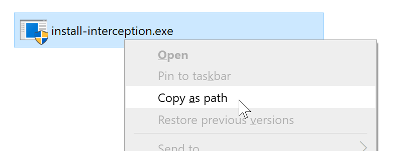
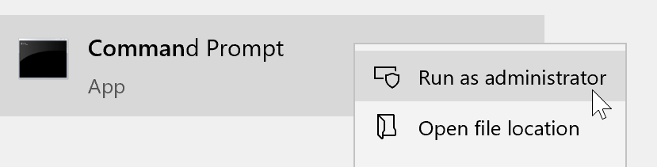
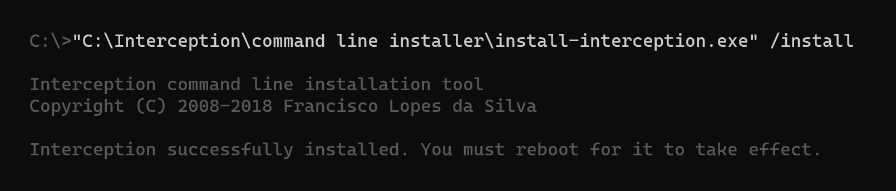
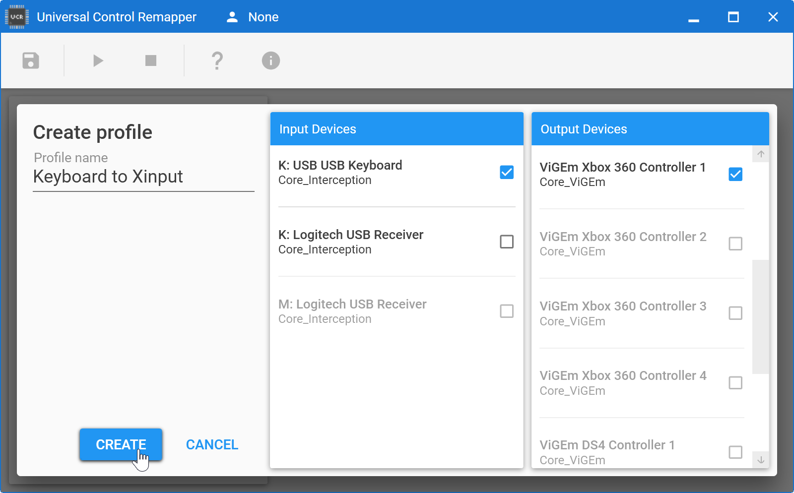
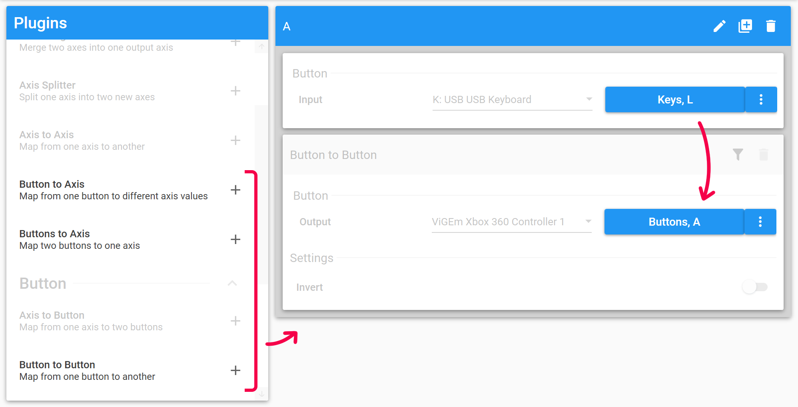
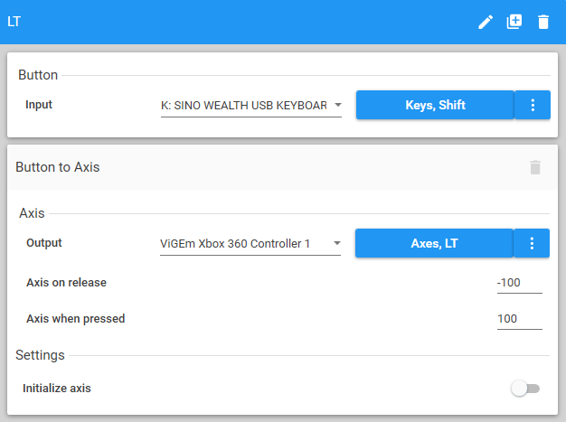
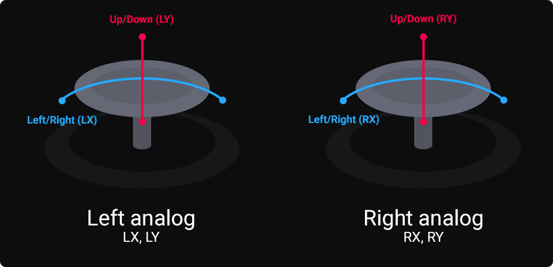
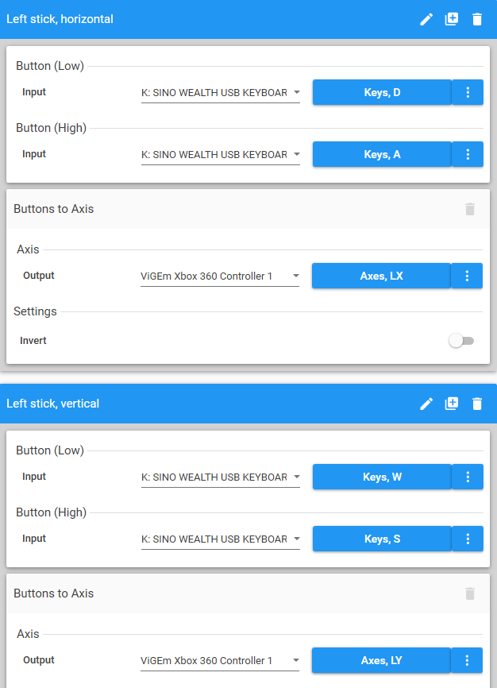
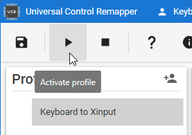

This is a tutorial on using UCR, which emulates an xbox controller and uses your keyboard as input. This is useful in cases where multiple people only have a keyboard to play games with, and the game does not let you use a different set of keys for each player. It can also be useful if the host can't or doesn't want to give you actual keyboard permissions. UCR can take a while to set up, so if possible, use a controller instead.
Note: There's also a built-in basic "keyboard to controller" emulation when you join games hosted via Arcade Beta, which requires no setup. It lacks button rebinding, d-pad, and the right analog stick, so you may only use it for games with simple controls, like Overcooked.
You will want to setup UCR on the guest's computer, instead of the host. This will allow the host to use their mouse and keyboard as normal, while the guest uses the emulated controller.

Open command prompt as administrator

Paste the path, type " /install" (with the space), and press enter
You should see a success message. If you don't, you might have done something wrong. You can get a general idea of how a correctly entered command looks like below, although the path you copied may look different

Restart your computer

Once you create the profile, double-click it in the list to start configuring which keys on the keyboard will trigger a button on the controller. The following is what you do for each button:

In the example above, I set my keyboard key "L" to trigger the face button "A" in the controller. There are three plugins you can choose, and each of them are for a specific set of buttons on the controller. Click a section below to learn more about each.
Use it for normal buttons (A, B, Start, Dpad, etc.). There's nothing special to this, just click the blue buttons to select what key on your keyboard and button on the controller it is.
Use for the left trigger (LT) and right trigger (RT). Map as normal, but set Axis on Release to -100. If you forget to set this to -100, you may find your triggers are permanently activated when in-game.

Use for the left stick (LX, LY) and right stick (RX, RY). You'll be mapping two keys at once for each axis, such as W and S for up and down.

To make sure the directions aren't inverted, you need to map in this specific order:
The example below maps the left stick to WASD.

To activate the mapping, select the profile and hit the play button to activate. You can then test if the controller works as expected with gamepad-tester.com
